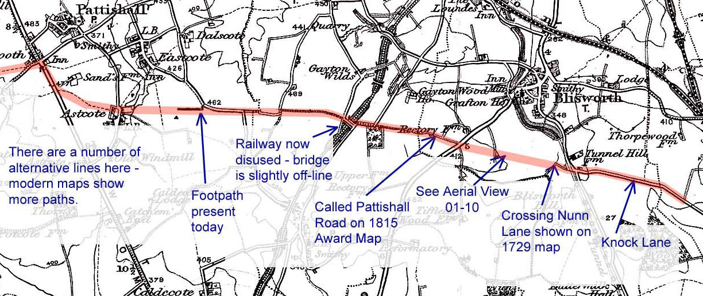

Roman Salt Way through our Parish - see Map below reprod. from 1899 OS Map.
Whilst the paragraphs here cover the background, eg. how we came to discover
the Saltway, a more detailed account
of the trackway, in an updated article is presented here.
From a happy coincidence of seemingly isolated facts it is certain that a track known in Roman times passed through the southern part of our parish. To illustrate this, imagine following, by low helicopter if you like, the long straight of Knock Lane (OS. SP7380 5235) from Roade towards Blisworth. When you meet the Stoke Road remember that Knock lane used to go on down to Fisher Brook and Nunn Lane and on 18th century estate maps it is shown crossing right over them both. Following this more or less straight line takes you over Glebe Farm and brings you to the Pynus Cottages on the Towcester Road. Pynus derives from the field name "Pyesnest" ie. magpie nest.
Continuing the line takes you along the RD21 bridleway, which was once called the Pattishall Road, and over the bypass to emerge at the very odd little kink in the Tiffield road (OS. SP7065 5304). The bridge over the disused railway there indicates the continuing line, marked out by byways and hedges, along the southern edge of Gayton Parish and headed straight towards the crossroads at Fosters Booth (notable as far as OS. SP6876 5325).
Such a road would thus link a military Roman base in the early years of occupation at Fosters Booth with at least four limestone quarries in Blisworth Parish. Flying the other way reveals no traces until, from the crossroads near the middle of Salcey Forest, there is a good alignment with the road heading towards Ravenstone. As much of Blisworth Hill was wooded 2000 years ago, the road would afford access for timber as well as stone.
But there appears to be even more to this track than that. It turns out that in 1978 the Ramblers Association along with some Tiffield villagers had cleared part of the track near the Eastcote Road from Gayton and, through their network, had identified the track as one of many ‘Salt Ways’ radiating from Droitwich - this one was considered part of the Droitwich to East Anglia Salt Way (this being a reference that is very obscure). Going by a recently found document, our curate in 1718 clearly knew about it! See aerial picture 01-10 and its caption (its grid ref. is SP 7236 5265). The route goes by Alcester and Stratford-on-Avon. There are some huge deposits of rock salt underground in the Droitwich area and also in Cheshire - a distribution network for salt was set up probably in the late iron-age era, improved on by the Romans, used throughout the pre-Norman era up to ~ 15C.
Filling in the line from Droitwich.
Bulk salt mining continues to this day under Middlewich in Cheshire and the boiling of mineral brine continued until about 1900 in
Droitwich. It was decided recently (2014) to try refine the line of the Saltway
east of the Watling Street and I was fortunate in coming across Beatrice
Hopkinson who is a trustee of the Droitwich Brine Springs and Archaeological
Trust (DBSAT). One of her articles is http://www.dayofarchaeology.com/author/beatrice-hopkinson/.
I was informed that an article by F.T.S. Houghton in 1929 covers the radiation
from Droitwich of a network of Saltways and this was to be found in the
Transactions of Birmingham Archeological Society but I needed another piece of
the puzzle to find exactly where the article is located and how I might obtain a
copy. The problem was eventually solved by S. Ratkai of BWAS (Birmingham &
Warwickshire Arch. Soc.) who very kindly copied both the pages and one of the
sketch map "fold-outs" from Trans Birmingham Arch.
Soc. vol. 54 (1929), pp 1 - 17 at Birmingham University Library. This in fact
saved me a trip to Birmingham since
inter-library access is not possible with the University Library and not with
Birmingham Central Library either, where copies are also shelved, because the
volumes are for reference only. Further internet search revealed that Della
Hooke (Birmingham University) had researched the economic history of the River
Severn region including details of the Droitwich salt production. Her book, The
Anglo-Saxon Landscape (Kingdom of the Hwicce), is to be recommended. A separate
article on this website discusses the saltway from Droitwich to Blisworth.
Filling in the line further to the East.
Returning to the question about a Droitwich to East Anglia Salt Way - why
would they have bothered? There was plenty of salt extraction on the east
coast. The possible answer to a coastal connection would be that at some
stage there was a desire to expand a Droitwich business and therefore export the salt.
Who would want to do this and why is a complex topic. Please see the related article to this
one dealing with a possible easterly extension.
So, when you are next walking up towards Nunn Wood, think of the ‘Salt Way’ that you cross as you pass through the little gate by Fishers Brook (OS SP7289 5251). Keep your eyes open too! In 1998, near to the Salt Way in Gayton parish there was found a hoard of 12th century silver pennies.
With thanks to Sally Edwards, Rita Poxon, Eileen Rose and Colin Wakelin
